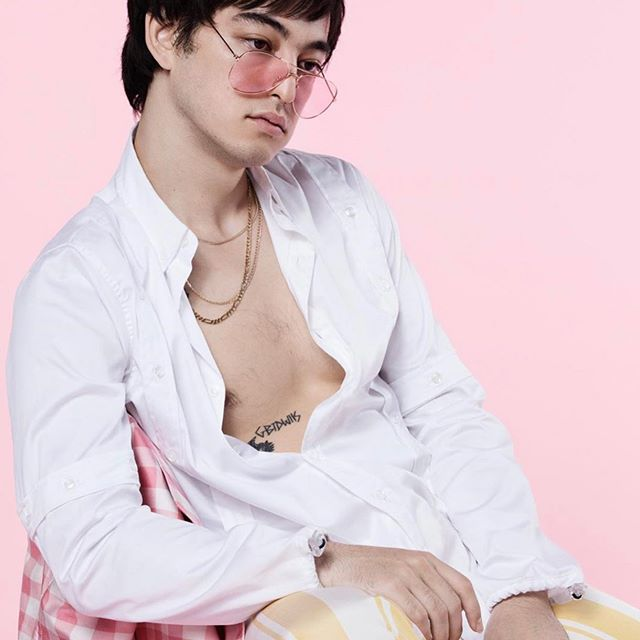

Joji Miller
Social Media


Genres
R+B
Stands for Rhythm and Blues. Originated in African American communities in the 1940s.Trip-Hop
Atmospheric down-tempo music, influenced by movie sound tracks, 1970s funk, and jazz.Lo-fi
A mashup of jazz and traditional hip-hop. Creates an atmospheric, instrumental soundscape.

@sushitrash